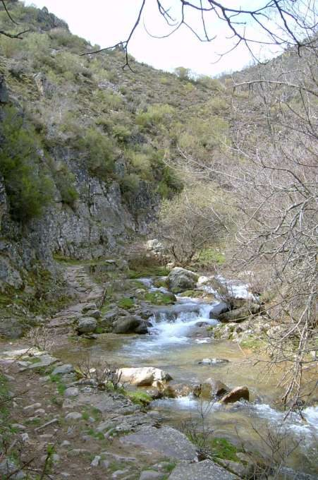
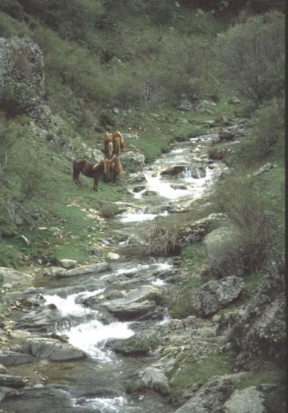

Arroyo de Ormazal
Viniegra de Arriba · comarca del Najerilla
- Distancia12,8 kmida y vuelta
- Desnivel400 m
- Tiempo orientativo4 h
- Dificultadmedia
- Época recomendadaprimavera (deshielo) y otoño
- Terrenocamino y senda
Casi toda la gente habitual del mundo de la montaña en La Rioja conoce el barranco del Río Urbión. Pero son menos los que se han adentrado en lo que yo llamo “su hermano pequeño”, el Arroyo de Ormazal; un barranco procedente también de las estribaciones del Pico Urbión. Para mí este arroyo es una reproducción en miniatura del de Urbión, pero durante los meses del deshielo: abril, mayo y junio, el caudal que lleva lo hace hermoso como pocos.
Pozas, pequeñas cascadas, torrentes… Es bastante largo, pero como no tiene desnivel apreciable podemos dedicarle toda una mañana y acceder hasta el lugar que yo os propongo en el mapa como destino final, un refugio de piedra situado en una pequeña loma.


Recorrido
Partimos de Viniegra de Arriba tomando un camino que pasa junto a unas granjas y cruza un par de veces el arroyo; sin duda el tramo menos atractivo del paseo. Un poco más adelante el camino se dirige claramente hacia el Arroyo de la Penilla, momento en el que lo abandonamos y buscamos un sendero, muy evidente, que circula por la margen derecha del Arroyo de Ormazal.
A partir de aquí el sendero nos guiará sin dificultad siguiendo el cauce del arroyo, principalmente por su margen derecha. Tan sólo debemos prestar atención en un par de ocasiones en las que confluyen varios arroyos para continuar por el principal; para eso está el mapa, claro. El momento en el que el paisaje se abre y la ladera de prados comienza a empinarse nos indica que estamos llegando a nuestro destino. A nuestra izquierda, un pequeño refugio instalado sobre una loma nos da la bienvenida.


{kind=link}
{kind=link}